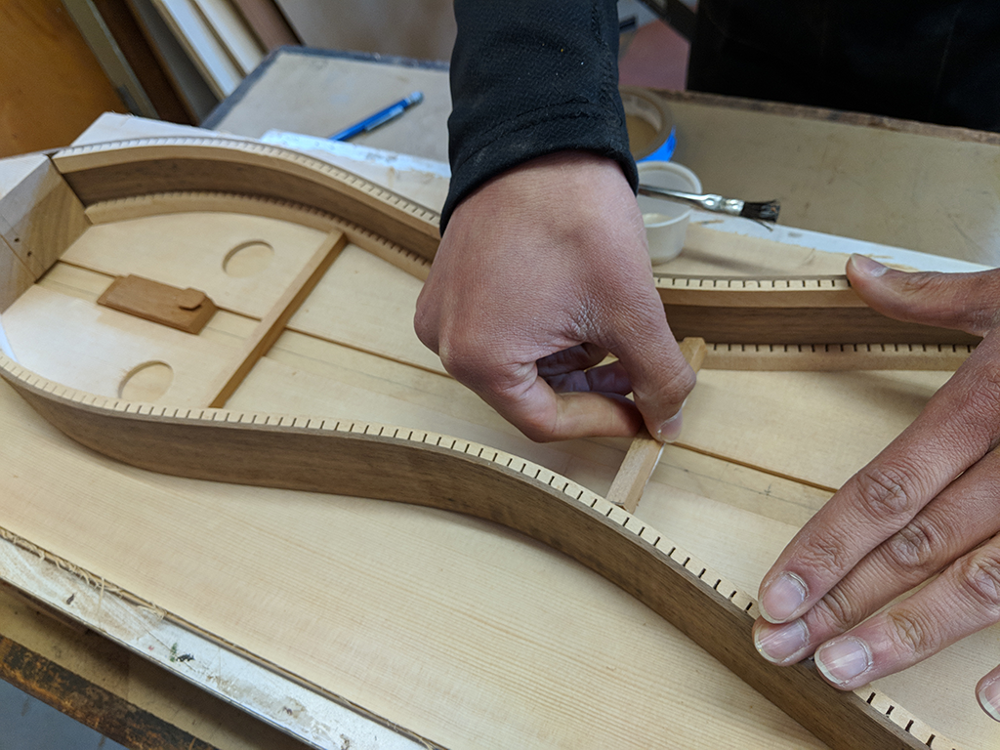

Update 4: Chugga-Chugga-Chugga, Choo-Choo!
By Mark on April 28, 2018
It's now the end of April (Wow time flies!), and the fear that I wouldn't finish in time has subsided. I made immense progress over Spring Break and am nearing the end of the construction. Tennis is over now too, so I can focus more on my dulcimer.
A (More) Little History
I've continued my research into the mountain dulcimer. I've transitioned from the origins of the instrument to its revival in the mid 1900s. Overall, a number of popular folk musicians such as Jean Ritchie and Paul Clayton began to include the instrument in their music. This sparked a sharp in increase in dulcimer interest, research, and building. Today, dulcimers have once again subsided in popularity due to the decline in folk music interest. However, there are still dulcimers present at almost all folk music festivals in the 21st century.
Ritchie started her career preferring to sing without instrumental accompaniment. However, by 1949, "the Appalachian dulcimer had become a hallmark of her style. After her husband made one for her as a present"
Clayton discovered the dulcimer around the same time. In 1950, he seeked out "traditional players in North Carolina, Kentucky, and Virginia, [where] he learned a variety of styles, becoming more proficient on dulcimer than he was on guitar. Through the knowledge he had gathered on the instrument, he collaborated on a booklet, The Appalachian Dulcimer"
What's Been Built
At the last project status update I had cut and attached the end blocks, cut wood for the headpiece, and marked where each fret would go. Everyday, the pieces in front of me look increasingly like a dulcimer!
With the pieces for the headstock cut, I glued them together, clamped them, and let them sit overnight. The next day, I sanded the outside to achieve the smooth curves that I wanted in the final product. After the exterior, I drilled a hole in the top that allows me to have a "curling wave" shape (similar to a surfing wave). Next up was sanding. Hours upon hours of sanding, but I resulted with a professional looking head stock!
I also finished the fretboard. I cut the spaces for each fret using a thin blade on a table saw, and then inserted stainless steel frets into each pocket. The finished product is imaged below, and I love how the steel contrasts the ebony.
Another way that Father Martin inspires me as we work is how he is able to balance old knowledge and wisdom with new thinking and trends. Father Martin knows every wood inside and out. He knows how it sounds, the look, the varieties, and even the unique smells. His knowledge is a result of over 50 years of woodworking, and yet he can apply it to modern styles as well. For example, he recommended the thin strips of maple to accent the darker woods. As someone who appreciates contemporary art, I love the addition and it is something I wouldn't have even thought of myself. I am so thankful to have him mentoring me on this project.
Nevertheless, after the fretboard and headstock were finished, I added an inner lining to the sides which add support and glue surface. I used clothes pins as clamps because the strips are too small to use regular lamps, plus I needed over 20 over them.
The next step was the face of the dulcimer. I chose cedar for the light color, and I drilled 4 holes for the sound. I then added 3 struts, which keep the pieces together. Finally, I added the laser cut design to the bottom pair of holes.
The last two things I did was add a contrasting ebony block to the top of the sides, and I drilled three holes in the head stock for the tuners.
I have AP tests coming up, but I do not foresee any major difficulties with my dulcimer. Next, I aim to attach the head stock to the sides and then move on to the back.
|  | ||